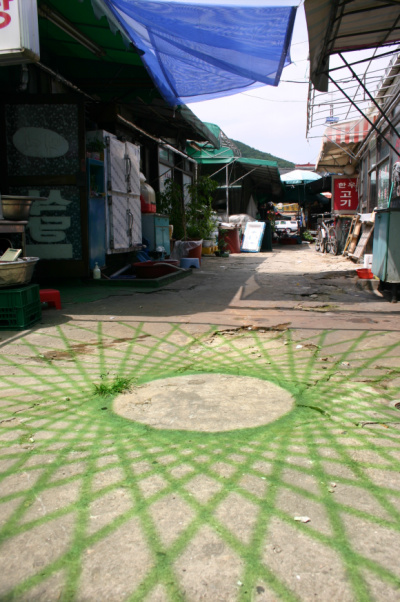
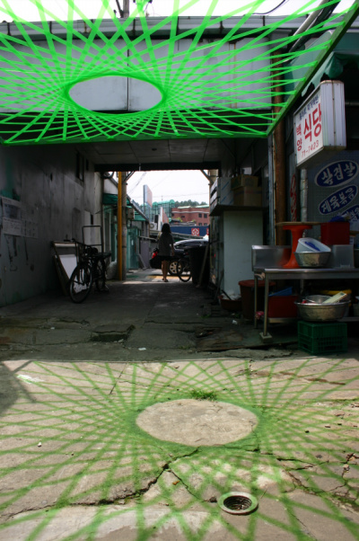
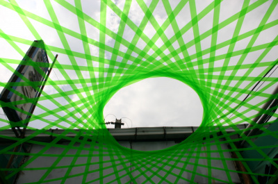

.jpeg)
seoksuartproject.blogspot.com 에서 옮김
SCULPTURE EXHIBITIONS
2008 SUSTRANS, Lough Neagh, Northern Ireland,UK.
2008 Life on a Leaf house project, Finland.
Sep 04 IncLINE, Grey Street, Newcastle,UK.
Oct 03 Mogami Open Air Art Festival, Japan.
Jul 03 National Botanical Garden of Wales Exhibition, UK.
May 03 SUSTRANS, Spen Valley Greenway, W. Yorkshire.
Sep 02 Busan Biennale, ‘Sea Art Festival’, S.Korea.
Aug 02 Transformations,Yorkshire Forward,Barnsley & Scarborough, UK.
Apr 02 Kezouin Zen Temple, Kamakura, Japan.
Oct 01 Abiko Open Air Exhibition, Tokyo, Japan.
Jun 01 Covent Garden Flower Show, London, UK.
Nov 00 2nd Yokohama International Open Air Exhibition, Japan.
Aug 00 National Institute of the Arts, Taipei, Taiwan.
Aug 00 5th International Nature Art Exhibition, Kong-Ju, S. Korea.
Jun 00 Mariehamn, Aland, Finland.
SCULPTURE PARKS
June 06 Yorkshire Sculpture Park, Access Trail.
Feb.00 South Carolina Botanical Gardens, Clemson, USA.
RESIDENCIES
2007 Guisseny, Brittany, France. National Choreographic Centre.
GALLERY INSTALLATIONS
May 07 ‘The Living Image’ , Leeds Art Fair 07, Leeds,UK.
Sep 05 ‘Co-ordinates’, Salts Mill, Saltaire, W.Yorkshire,UK
May 04 ‘The Living Image’, Dana Centre, Science Museum, London,UK.
Aug 01 ‘One Tree’ Project, Royal Botanical Gardens, Edinburgh, Scotland.
PHOTOGRAPHY EXHIBITIONS
Nov 01 Saikai-Project, Omori Bellport and Gallery Tokyo Japan.
Oct 01 Galerie Omotesando, Tokyo, Japan.
Oct.00 Three Visions, Plas Glyn-y-Weddw, Llanbedrog, Wales,UK.
Mar.00 Florida State Museum of Art, Tallahassee, Florida, USA.
REVIEWED
2008 1000 x Landscape Architecture’, Braun Publication.
2007 WILD, Expressive Architecture, JE Andersson, Finland.
2004 ‘People Making Places’, Public Arts publication, ISBN 0954074815
Sep 03 ‘Urban Art in Action’ (Journal) Landscape Review p.20-22
2001 ‘One Tree’, by Olsen and Toaig, pp.74-5 . Merrell publishers
July 00 Landscape Architecture Journal, p.14, ‘RipRap- The New and Noteworthy’.
2009-08-03
sap2009.egloos.com 에서 옮김
그린 세도우 Green Shadow



공간의 물리적이고 문화적인 측면에 대해 입체적으로 대답을 하는 영국작가 투루디엔트위슬은 이곳 석수시장에 푸른 그림자(Green Shadow)를 만들어 냈다. 그가 설치해 놓은 '푸른 그림자'는 지속적인 인간의 움직임과 행동 그리고 빛, 기후, 자연적인 성장과 소멸 등을 포괄하는 가변적인 요소와 지속적으로 상호 작용한다. 또한 '공간탐사'라는 이번 전시를 통해 공간에 대한 자신의 답변과 사람들의 반응이 어떻게 각자의 것으로 만들어 가는지를 보여줄 것이다.
사진_트루디 엔트위슬(Trudi Entwistle)
작품_Green Shadow_3x3m_wood, pvc film_2009
그린 세도우 Green Shadow(설치작품)
이 작품은 전시장 인근에 있는 ‘석수시장’의 한가운데를 가로 지르는 길 양켠의 가게 위를 덮고 있는 천막들과 이를 매어 놓는 수 없이 서로 얼켜 있는 끈들을 보고 한국 재래시장의 과거의 영욕과 오늘의 쇠락해 가는 모습 그리고 미래의 새로운 비전을 기하학적 설치물을 통해서 절묘하게 나타내고 있다.
녹색 테이프를 직선으로 서로 교차시켜 구성된 도형이 하나의 펑 뚫린 원속으로 수축되어 강한 여름 햇빛을 받아 시장 바닥에 다시 같은 도형의 녹색의 그림자가 투영된다. 빛을 빌려 올 뿐 태양이 움직이는 각도에 따라 음영들이 변화한다. 이 작품의 논리적 핵은 직선과 그 직선이 만들어 내는 원의 만남에 있다. 작품의 기하학적 모형과 선명한 단 녹색이 주변 시장과 빚느내는 현상학적 이질감은 강한 임팩트가 되어 관객들을 압도한다. 여름의 나련한 안양의 재래시장 전체를 신선한 각성으로 일께워준다.
소재의 물적 실체성이 매체로 변환되어 투영된 그림자를 만들고 그 전체가 하나의 주제로 향하게 하는 과정process은 자기 언급적self-reference인 메타화가 이루어 지고 있는 논리를 직유하고 있으며 이는 햋빛과 기하학적 모형이 만나 서로 ‘陽과 陰의 交合’으로 지상에 투영된 녹색 그림자를 탄생시키고 있다는 해석을 가능하게 하며 자기가 자기안에 그 정체성을 품고 있다는 사실을 증거한다. 추상과 사실적인 시장의 물리적인 실재가 이렇게 절묘한 어법에 의해 서로 유기적으로 당기면서 만나는 광경을 연출해 내는 솜씨는 과히 일품이다. 실재와 메타간의 서로 되먹힘이 일어 나는 사상mapping의 과정의 논리가 이 절묘한 변환을 담보해 주고 있다. 일직이 작가의 장기인 “나의 조각적인 풍경(sculptural landscapes)은 머물고 명상하여 주변환경에 대해 사색할 수 있는 공간을 제공한다”는 말 그대로 지나가는 사람의 발을 잠시 멈추게 한다. 그리고 사색케 한다. 우리의 상상력은 시장의 과거로 달린다. 그리고 오래된 미래로 이어저 갈 역사에 까지 비상한다.
재래시장은 현대의 기업화된 대형 마트의 규모와 효율 그리고 청결하고 안락한 샷핑에 익숙한 사람들이 외면하는 곳이며 점점 쇠락해 가고 있다. 그러나 다른 한편 이 재래시장은 옛 저잣거리와 장터의 흔적을 어딘가에 남기고 있어 향수를 자아 내게 한다. 현대화된 마트에서는 찾아 볼 수 없는 우리의 인정과 어떤 한스려움(한민족의 통사적 코드에서 파생되 나오는 정조)이 깃들어 있다. 잠시 우리들의 상념은 목가적인 옛 저잣거리로 달려간다. 그곳에서는 화페와 물물교환이 동시에 이루어질 뿐 아니고 사람의 인정이 살아 숨쉬고 ‘한’스려움이 쏟아저 나오며 모든 볼거리들이 흥을 돋구며 이야기꺼리들을 통한 삶에 필요한 정보교환이 이루어지는 광장역활을 해 오던 장소이다. 더 소급해 보면, 아련한 옛날, 우리의 건국신화로 등장하는 인간이 서로 모여 정사를 의논하고 세상 이치를 이키고 배우며 물물교환을 하던 신성한 장소가 神市로 나아간다. 個와 全體가 一卽多의 상생원리에 따라 俗과 聖이 함께 서로 융합 교류하던 광장(open space)역할을 하면서 나라 자체의 호칭이 되기도 했던 신시는 오늘날의 시장의 원형이기도 할것이다. 그 한스려움은 현대의 매우 합리적으로 보이지만 ‘소비’만 부추키는 서구의 현대식 유통 시장이 갖고 있지 않는 우리 민족의 초시공적인 통 큰 맛이 베여 있는 코드이다. 재래시장 석수가 그 살아 있는 모델이 되어야 한다고 암시하고 있다. Trudi의 그린 새도우는 ‘우리의 오래된 미래’를 향한 환상을 불려 일으키면서 이러한 조형의 역사적 맥락에 대응하는 수 없이 많은 물음에 대응하는 하나의 해답을 던지고 있다. 이를 받아 현대의 살아 있는 상황적변화와 계기적 사건들로 풀어 내는 것은 관객의 몫이고 동시에 석수시장의 사람들의 몫이기도 하다. 그러함으로 Trudi의 기하학적 부적인, 그린 새도우는 현대적 감각이 전통적인 문화와 창조적으로 융합할 수 있다는 것을 보여주고 있다.
Green Shadow (gist of the ‘Green Shadow’ in English)
This work is intuitively inspired by the tent coverings over store
roof tops and ropes that hold each other in the middle of the road at
a traditional market, “Seoksu Market” near the exhibition hall. It is
a site specific installation where green tapes are crossed to make a
shape that is contracted into a circle with a hole. The shape is
intended to create a green shadow under the strong sunshine in the
summer. The deceivingly simple visual impact of a geometric pattern of
light and the harmony of Yin and Yang awaken the drowsy traditional
market in summer. The work seems to say to passersby, “Stop and
meditate. My sculptural landscape offers a place for you to appreciate
the wonder of our surroundings.” Although the traditional market is
being increasingly outrivaled by the comforts of the modern,
industrialized, sterile shopping malls and supermarkets. It yet holds
a hidden charm whose fragrance helps us recall times passed. It was a
place of meeting where people could trade, engage in small talk, eat
humble food, and enjoy themselves. It was also a stomping ground for
transients to come and show their talents to the public. It was an
innocent, non-exclusive gathering place where you and I could meet for
a variety of purposes. It is surprising that the artist Trudi throws a
meditative motive through the geometric model that projects this green
shadow in the market place bearing the origin of this market. She
carves the only geometrically abstract code that can infer the super
dimension of an abstract geometric model of dimensional deformation.
This philosophical and surprisingly intelligent ability of mapping
sunshine, shadow, and Yin and Yang themes can be seen in her other
works as well, i.e., “Pine steps” and “End of Summer whispers”. Her
abstract work combines “site-specific and spatial culture of
multi-dimensional answer” because it creates a self-referenced object
and evolutionary aspect between meta. The artwork “Screen Shadow”
amazingly reaches the philosophical thought process or the world of
the Protagonist that holds both question and answer simultaneously.
Along the lines of Adorno’s belief, “Modern art is complemented by
philosophy and it should proceed with the righteousness that creates
herself as art,” this work is an art and design aesthetic collaborated
with the aphorism. 글: 조규현
2009-09-10
sap2009.egloos.com 에서 옮김